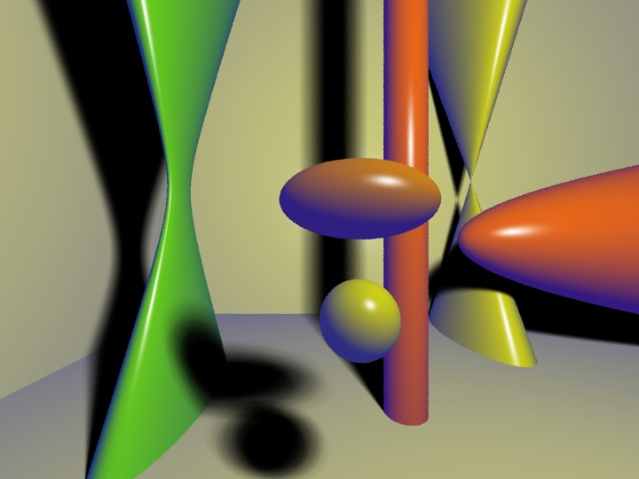
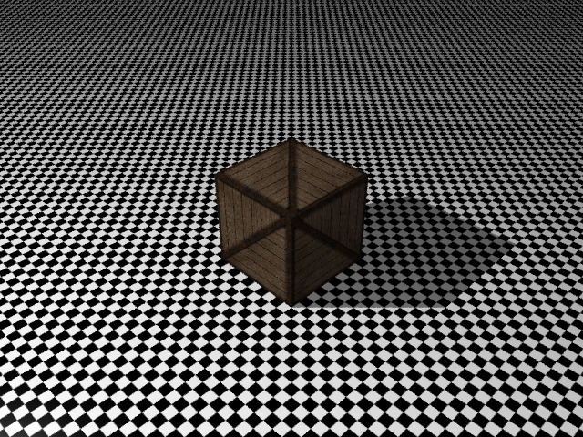
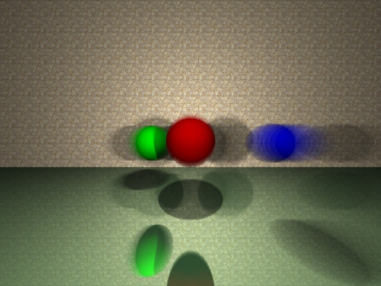
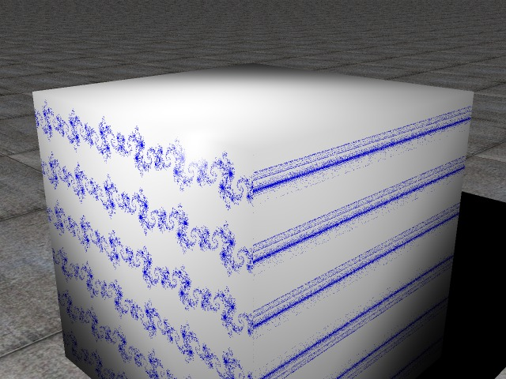
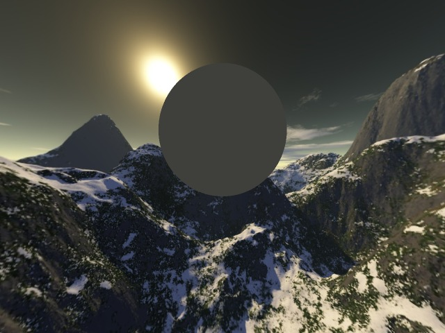

Pradeep Garigipati

Basic Ray tracing with soft shadows

Texture Mapping

Reflections & Refractions, Depth of Field and Motion Blur

Texturing using Fractals, Perlin noise and Solid Textures

Image based lighting